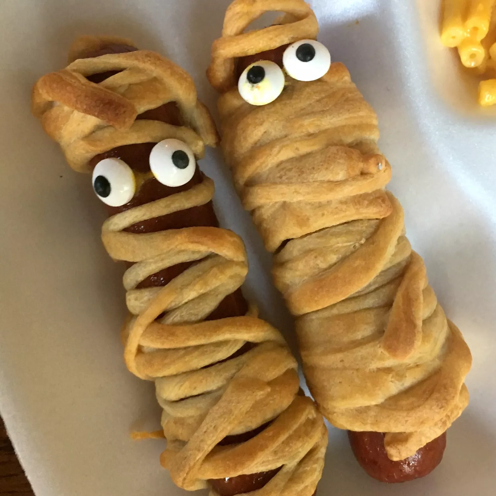

Hot Dog Mummies

- about this recipe:
-
this recipe has 8 servings and could be cooked in just 25 minutes total.
it is super simple and easy to cook!
what your'e going to need:
- 8 hot dogs
-
1 (8 ounce) package refrigerated crescent rolls (such as Pillsbury®
Grands! Big and Flaky)
- 1 teaspoon yellow mustard, or as needed (Optional)
steps:
- Preheat oven to 350 degrees F (175 degrees C).
-
Place hot dogs in a saucepan and cover with water; bring to a boil.
Reduce heat to medium-low and simmer until warmed through, about 5
minutes. Drain.
-
Roll crescent dough onto a work surface; tear into 8 pieces. Roll 1
piece dough around each hot dog, creating the look of a mummy. Place
dots of mustard on the top of each for the eyes, nose, and mouth.
Arrange hot dogs on a baking sheet.
-
Bake in the preheated oven until crescent dough is golden brown and
flaky, about 10 minutes.
now you have a simple, delicious halloween themed meal. Enjoy!
go back